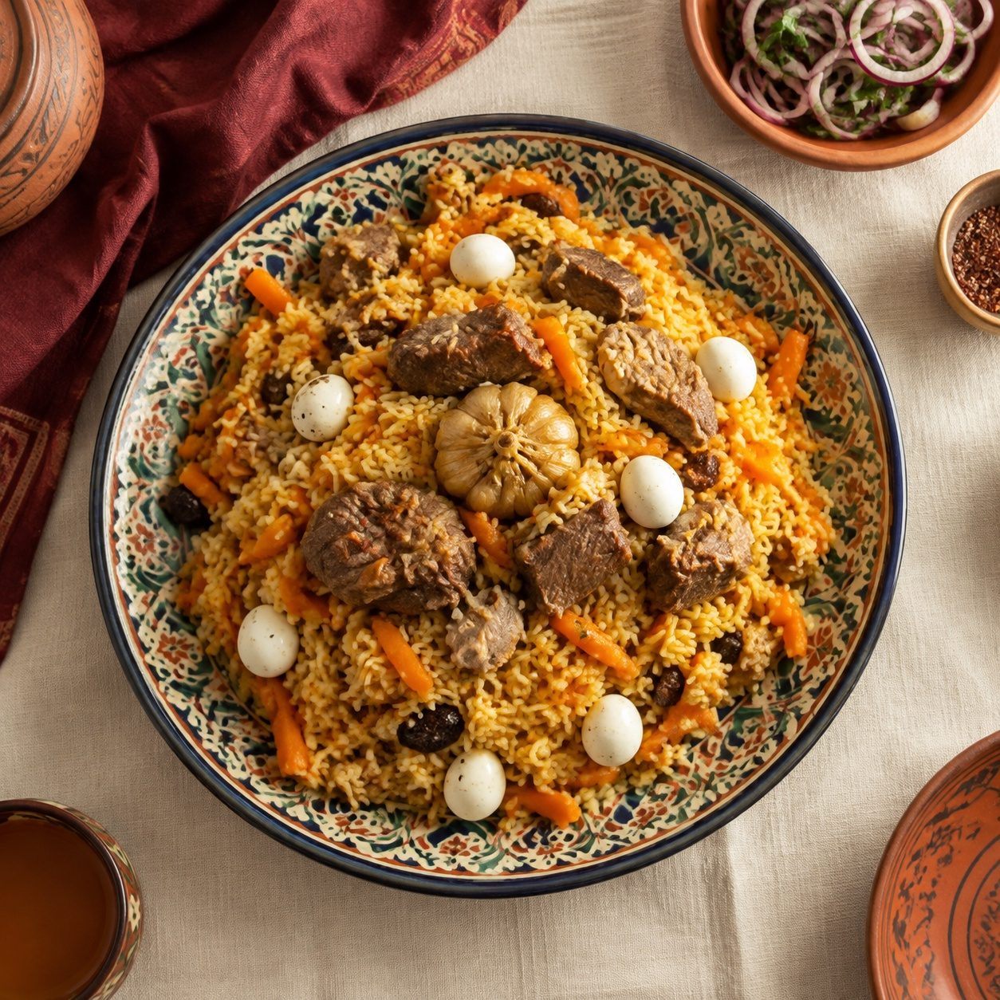
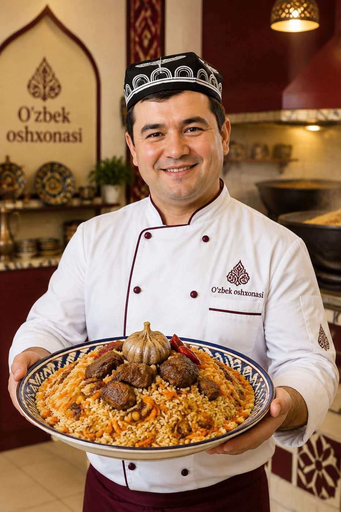
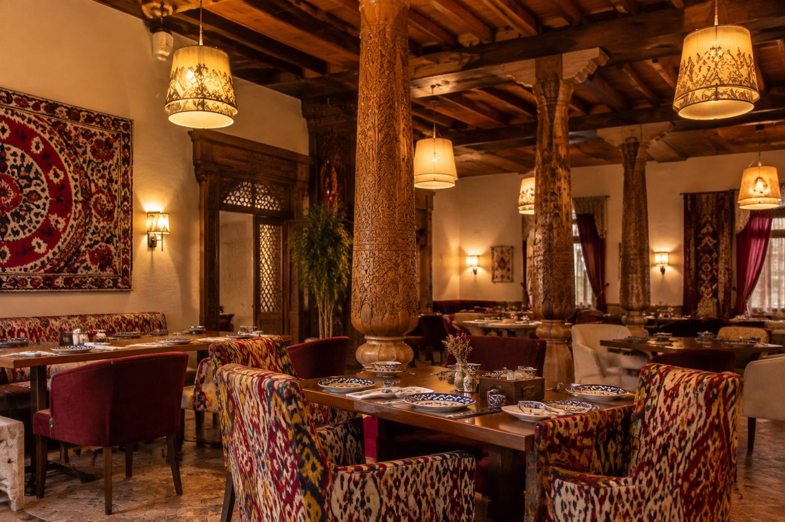
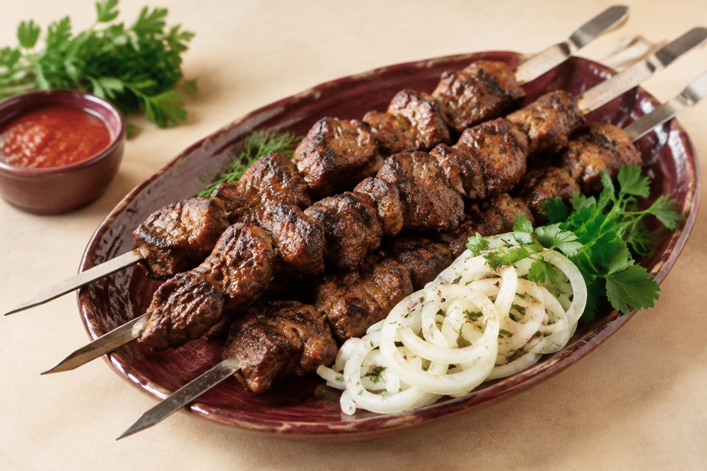
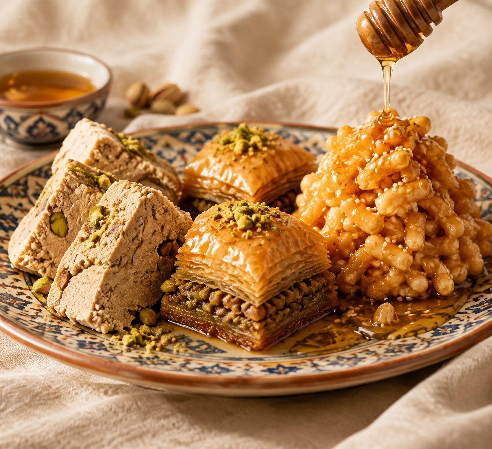

Milliy taom. Milliy mehr.
Uychi · Milliy oshxona · 2024-yildan
Qozonda pishgan palov, tandirdan chiqqan somsa va cho'g'da qovurilgan shashlik — barchasi har kuni sovg'a sifatida tayyorlanadi.

Bizning menyu

Bosh oshpaz
25 yillik tajriba. Samarqand palovi maktabining vakili, 3 karra "Oltin qozon" tanlovi g'olibi.

Bizning zal
Naqshinkor ustunlar, atlas gilamlar va jonli musiqa. 120 kishilik asosiy zal, 4 ta alohida xona va yozgi hovli.
Joy band qilishHar kuni tandirdan issiq non va somsa
Faqat fermer xo'jaliklaridan go'sht
Shahar bo'ylab 40 daqiqada yetkazish
Mijozlar fikri

"Shashligi og'izda eriydi. Oilam bilan har yakshanba shu yerdamiz."
Sardor, Toshkent"Palovini Samarqanddakiday qilishadi. Mehmonlarni faqat shu yerga olib kelaman."
Malika, Farg'ona
"Shirinliklari va choyi alohida gap. Interyer ham juda chiroyli."
Jasur, AndijonIsh vaqti
Aloqa
Namangan, Uychi ko'chasi 18
+998 50 030 54 50
taom.uz